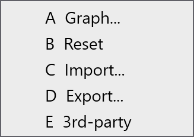

Bend deductions
Bend deductions digunakan untuk menghitung developed length[1] dari bagian logam lembaran. Ini diperlukan untuk memproduksi bagian secara akurat dengan dimensi yang benar setelah pembengkokan.
Bend deductions memperhitungkan peregangan dan kompresi material yang terjadi selama proses pembengkokan. Dengan menggunakan bend deductions, TecZone Bend dapat menyesuaikan panjang pola datar untuk memastikan bahwa bagian yang ditekuk akhir memenuhi dimensi yang ditentukan.
Bend deductions dapat bervariasi berdasarkan faktor seperti jenis material, ketebalan, radius lekuk, dan metode pembengkokan.
Ketika bagian 3D diimpor ke TecZone Bend, perangkat lunak secara otomatis menghitung bend deductions berdasarkan geometri bagian dan properti material. Anda juga dapat menyesuaikan bend deductions secara manual jika diperlukan untuk menyempurnakan panjang pola datar.
Pengaturan bend deduction
Bend deductions kustom dapat diatur dalam database Bend Deductions. Untuk mengakses, klik pada ikon database dan pilih Bend Deductions.

Anda dapat Add skenario bend deduction baru atau memilih skenario yang ada untuk Edit atau menghapusnya. Anda juga dapat Copy skenario yang ada untuk membuat yang baru dengan pengaturan serupa.

Klik Add untuk membuat skenario bend deduction baru. Pilih dan ketik parameter berikut:
-
Material: Pilih material untuk mana bend deductions berlaku.
-
Thickness: Atur ketebalan lembaran untuk mana bend deductions berlaku.
-
Punch radius: Atur radius alat atas untuk mana bend deductions berlaku.
-
V-width type: Pilih jenis pengukuran lebar-V yang digunakan.
-
Die V-width: Atur lebar alat bawah untuk mana bend deductions berlaku.
-
Die radius: Atur radius alat bawah untuk mana bend deductions berlaku.
-
Die angle: Atur sudut alat bawah untuk mana bend deductions berlaku.
Klik OK untuk menyimpan skenario baru.
Selain itu, pilih skenario bend deduction dan klik opsi … untuk melihat opsi lebih lanjut:

-
Graph: Menampilkan grafik yang menunjukkan hubungan antara sudut lekuk dan bend deduction. Representasi visual ini membantu memahami bagaimana bend deductions berubah dengan sudut lekuk yang berbeda. Gerakkan kursor di atas garis biru dan merah grafik untuk melihat nilai spesifik.

-
Import: Memungkinkan Anda mengimpor data bend deduction dari file CSV eksternal.
-
Export: Memungkinkan Anda mengekspor data bend deduction saat ini ke file CSV untuk tujuan cadangan atau berbagi.
-
3rd party: Menyediakan opsi untuk mengimpor data bend deduction dari perangkat lunak atau sumber pihak ketiga.
Jenis bend deduction
TecZone Bend mendukung tiga jenis bend deductions: Air Bending, Folding, dan Coining.
Setiap jenis memiliki set parameter dan kalkulasi sendiri untuk menentukan bend deductions secara akurat berdasarkan metode pembengkokan yang digunakan.
Air Bending
Air bending adalah metode pembengkokan umum di mana logam lembaran ditekuk menggunakan punch dan die tanpa menutup die sepenuhnya. Metode ini memungkinkan lebih banyak fleksibilitas dan cocok untuk berbagai material dan ketebalan.
Untuk menambahkan bend deductions untuk air bending, pilih skenario yang sesuai dari database Bend Deductions. Klik Add untuk membuat skenario deduction air bending baru dan ketik Bend Angle.

Saat Anda memasukkan sudut lekuk, nilai Deduction (Edge), Deduction (Tangent), dan Inner Radius yang sesuai akan dihitung dan ditampilkan.
Klik OK untuk menyimpan deduction air bending baru.
Folding
Folding atau Hemming adalah metode pembengkokan di mana logam lembaran ditekuk menggunakan punch dan die yang menutup sepenuhnya, menciptakan lekukan tajam. Metode ini sering digunakan untuk material yang lebih tipis dan memerlukan kontrol bend deductions yang tepat.

Untuk menambahkan bend deductions untuk folding, pilih skenario yang sesuai dari database Bend Deductions. Klik Add untuk membuat skenario deduction folding baru dan pilih Hemming method.
Klik OK untuk menyimpan deduction folding baru.
Coining
Coining adalah metode pembengkokan di mana logam lembaran ditekan di antara punch dan die dengan tekanan tinggi, menghasilkan lekukan yang tepat dan tajam. Metode ini biasanya digunakan untuk material yang lebih tebal dan memerlukan bend deductions yang akurat.

Untuk menambahkan bend deductions untuk coining, pilih skenario yang sesuai dari database Bend Deductions. Klik Add untuk membuat skenario deduction coining baru.
Klik OK untuk menyimpan deduction coining baru.